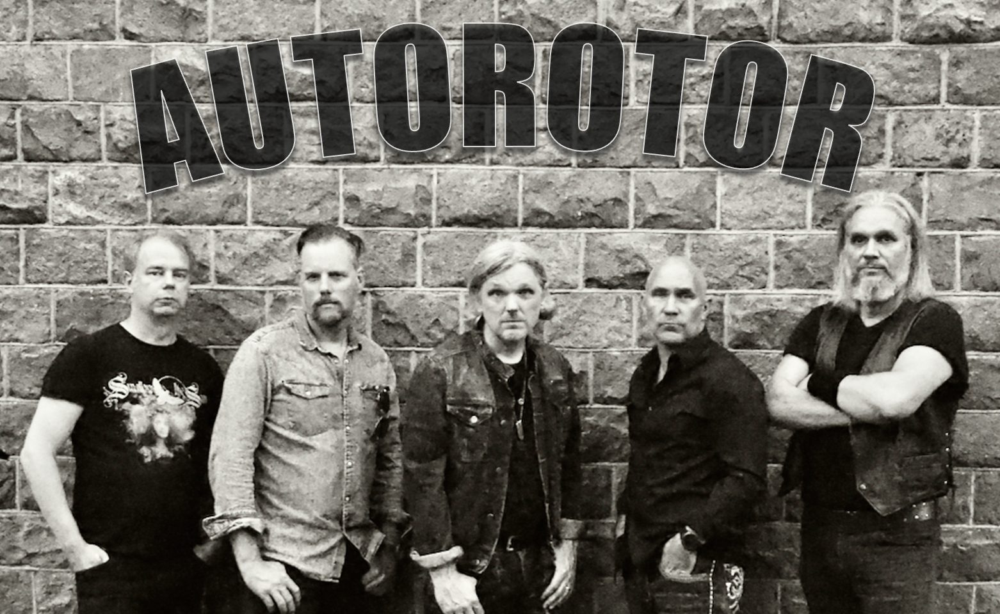

About
Autorotor was formed in Stockholm during the pandemic. It rose from the cover band Deep Legacy after it turned out that it was even more fun to play own tunes as compared to the legacy of Whitesnake and Purple. Most of the song writing happened in the studio in Sharpnude where the band rehearsed for a couple of years. To get even more creative energy it was decided to move on to Longbridge - an old mental illness asylum - that certainly have the right vibes for some serious rock and roll.
Current members:
- Drums - Johan Moquist
- Bass - Johan Kejler
- Song - Martin Andersson
- Guitar - Steeve Führ
- Keys - Fredrik Rubensson